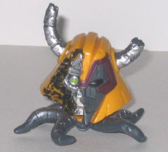
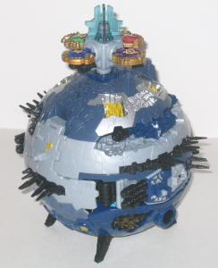
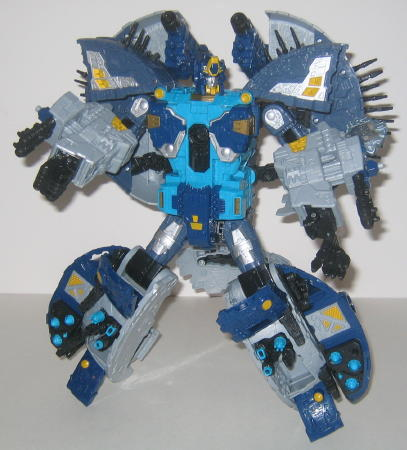
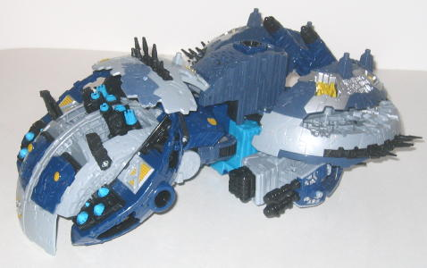

Unicron Head Pack-In

Allegiance
: None
Color Scheme
: "Cheese" yellow, dark
bluish gray, dull silver, and some dark fuchsia, black, yellowish off-white,
and light green
Rating
: 6.1
Packaged with some of
the earlier Primus releases, the "damaged Unicron head" pack-in is roughly
the size of
Armada Unicron's
head with tentacles
coming out the bottom. This extra is detailed very, very well, with the
skull internals looking extra cool, and definitely evil enough to be Unicron,
what with the sharp teeth and all. The half-and-half skull/normal face
was also a great idea and makes Unicron look all the more evil. Besides
the blown-away half of the face, other "battle damage" is apparent, such
as chipped and cracked horns, cracks and chunks blown off the back end
of the helmet-head, and exposed wiring on few of the tentacles. The tentacles
themselves are a bit too thick proportionally, however, even accepting
that they need to support the head-- I couldn't see all these thick tentacles
fitting inside Unicron's neck back when it was attached to his body. The
coloring and paint apps on the Unicron head are pretty good and certainly
more then adequate, though a few oddities do occur besides the obvious
"Why isn't he in his
Energon colors
?". For
one, the normal half of the face is dark gray, while on the Armada toy
it was nearly white. Also, there's a nice dull silver spray on the front
halves of the horns, but the back halves are not painted at all. It's not
all that noticeable, but it is a bit odd. Otherwise, the paint apps are
great-- I especially love the charcoal black wash on the damaged parts
of Unicron's helmet. One big downside, though, is that the Unicron head
has no movement at all-- I was at least expecting it to be able to rotate
around where the tentacles met the head, but no such luck. However, as
a freebie, you really can't go wrong with getting the Unicron head-- it's
especially cool to "orbit" it around Primus' planet mode like it did in
the '80s movie.
Cybertron Primus



Allegiance
: None (Because he has
no Autobot symbol on his body, I'm assuming he's got a silver Autobot key
and Autobot packaging because A. He's a good guy, albeit not an Autobot
and B. They didn't want to create a new Cyber Key and packaging background
for just him. 'Sides, the guy predates Autobots and Decepticons, how can
he himself be an Autobot?)
Size
: Supreme
Homeworld
: Cybertron
Cyber Key Code
: sp8u
Difficulty of Transformation
: Hard
Color Scheme
: Light milky gray,
dark dull navy blue, dull flat grayish blue, silver, black, sky blue, and
some dull metallic bronze, dull goldish yellow, and translucent aqua-blue
Rating
: 9.5
The maker of the Transformers
race finally gets his own toy, and his alternate mode is of the Transformers'
home planet, Cybertron! All in all, Primus' planet mode is very good, considering
the thing also turns into a robot. For one, unlike Armada Unicron, the
planet is pretty close to a sphere, all the way around-- however, to keep
Primus from rolling all over the place, four rather ingeniously-placed
"towers" on the underside of the planet act as a de facto stand for it.
There's also four towers on the top side of Cybertron that have Minicon
ports on the top of them, along with a Minicon port on three of the four
sides of the planet, each near the equator. As you'd expect from a planet-sized
Transformer, Primus is PACKED with mold detailing, with little cities,
buildings, towers, and roads all over this mode. An especially cool treat
for big-time Transfans is that some of the buildings are recognizable!
One is the mushroom-shaped building, Kolkular (seen in
The War Within
comic book series), near the equator; another is the capital city of Iacon,
on the opposite side of the planet as Kolkular (in fact, the only place
the Iacon city was really laid out visually before was in the
Transformers
Ultimate Guidebook
, on two pages-- now THAT'S obscure!); and it
also appears that the building structures around the speaker port near
the north pole is the Council Citadel from the
Beast Machines
TV
show, though I could be wrong on that last one. There's also tons of paint
detailing on the cities and various other structures on Cybertron's surface,
which is also pretty cool and helps to break up al the gray and blue. There
are two gimmicks that can be activated in this mode-- if you insert the
Cyber Key into one of its two slots on the sides of the planet, the "wrist
guns" from Primus' robot mode will lift up and extend, giving Cybertron
some BIG guns! Also, Primus comes with the Omega Lock, the ancient artifact
from the TV series that, when all four Cyber Planet Keys are placed in
it, unlocks Primus' true form. And it does the same here-- put the Omega
Lock into its slot at the top of Cybertron, and a bright red light comes
on inside the Lock. Push it forward, and the top half of the planet splits
apart, allowing you to begin Primus' transformation as a "outer space"
sound is emitted from the speaker. There are two problems I have with the
planet mode, however, one major, one minor. The major one is the pretty
big gap in the sides of the planet about halfway between the north pole
and the equator, due to the large cannons used in robot mode. It's rather
unsightly from all but a few select angles-- I would've preferred leaving
out those cannons if it meant this gap was closed up, or at least somehow
relocating the cannons to the underside of this mode, where they wouldn't
be nearly as visible. My minor problem with the planet mode is that the
robot hands aren't quite covered up, and they don't mesh in color with
the surrounding pieces.
Primus' robot mode is
definitely the main draw for the toy, as it comes with a load of weaponry
and has quite a few gimmicks. The overall color scheme is now more apparent
in this mode, with a light sky blue added to the mix, mainly on the main
body. The gray, silver, and a bit of yellow are nice colors, if not the
most eye-catching, but hey, there's only so much you can do when the general
colors of Cybertron have already been set in stone for 20+ years. I do
have to say, though, that I don't think the light sky blue fits quite in
as well with the other colors-- maybe a dull golden-yellow in its place
would have worked better and fit a "mighty creator" better. Primus' exquisite
mold and paint detailing carry over to this mode, so no problems there.
The head sculpt is very good and fits a creator for the most part, but
giving him a robo-beard like Unicron has would've helped him look more
ancient. His proportions are pretty much spot-on, though his legs could've
been just a TAD longer. His articulation is also very good-- he can move
at the head, shoulders (at two points), elbows (at two points), waist,
hips (at two points), knees (at two points). His fingers can also move
at TWO points each, and his thumb on each hand can move at one point. About
the only thing really missing is wrist articulation. Primus' planet kibble
is both good and bad, in a way-- the planet halves on his back and his
shoulders, both with building-spikes on them, look great and actually add
a bit to Primus' overall look, even if they do inhibit arm movement a little.
The big "butt flap" of planet kibble hanging off of him doesn't look that
great, however, and the feet and heels don't look all that hot, given that
they're just small portions of the curved planet surface. However, other
than that, the designers have done wonders getting all the parts of a sphere
to fit in so well with a roboot. The planet parts on the sides of Primus'
legs house a push-out (non-firing) piece of plastic with missiles molded
into it, and they also each house an extendable miniature claw-arm with
a Minicon port on the side of it. Primus also has some big giant-building-sized
guns in his lower legs-- however, to get these and the weapons on the sides
of his legs to be facing forward, you have to rotate the leg-planet parts
by inserting the Omega Lock into its slot on each leg and cranking it around.
It's not that big of a deal, but it is a bit of a bother to have to use
the Omega Lock again beyond just jump-starting the transformation from
planet mode. The Omega Lock also has to be used AGAIN at the final step
of the transformation, by pushing up with it in the slot on Primus' chest
to pop the head out and spread the arms apart. However, at least this time
you get blinking eyes and a "firing lasers" sound effect. Primus also has
one last gimmick available in this mode-- both of his larger cannons mounted
over his shoulders each fire a spring-loaded missile. Not exactly original,
but a figure this big needs some missile-firin' power.
Primus also has a third
mode, a "battle station" mode, though it's hard to imagine a planet-sized
battle station... not to mention it doesn't look anything like a battle
station, anyway. It's pretty much just his robot mode with a few steps
taken to transform it partially back to planet mode and then laid on its
stomach. No features that are only accessible in this mode or anything
of the sort, so this can easily be chalked up to another third mode that
was added in at the last minute and doesn't add anything to the toy. (Though
the flip side of that is that it doesn't take away anything from the other
modes, either...)
Overall, Primus is an
excellent toy of a character that's needed one for a long time, and is
one of the best toys of the Cybertron line. As far as "best TF toy ever",
I'd still reserve that for Unicron, seeing as how Unicron's robot mode
is a little better than Primus' (though Primus' planet mode is better than
Unicron's), and Unicron's planet mode is a little more playable than Primus'
is. Primus still comes awfully close, though, and is worth every penny
of his $50 price tag. Highly recommended.
Review by Beastbot
(Note: In some later releases of the figure, Primus was packaged with four Minicons, each from a separate Classics line Minicon Team. These are not reviewed here, but rather in the Classics Toy Review section.)